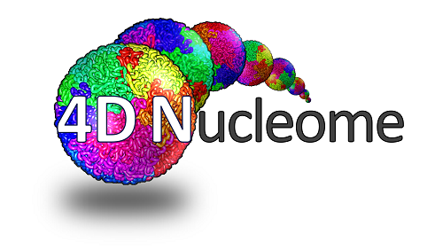

2020 4DN Phase II Virtual Kickoff Meeting
Held virtually on Zoom
December 2-4, 2020
The 2020 4DN Phase II Kick-off Meeting is open to 4DN Phase II funded members only (RFA-RM-20-XXX).
Meeting Agenda
Here are some essential information for attendees to prepare your presentations:
- Presentation time. Each research center and project will be allocated 10 minutes of time. (8 minutes presentation, 2 minutes for Q and A). The organizational hub (OH) and data coordination center (DCIC) will each present for 20 minutes including Q and A. The 10 minute presentation time will be strictly enforced in order to accommodate everyone. Please be mindful of your time.
- Presenter. Each team please designate a single presenter to minimize risks of interruption of transition between speakers.
- Presentation. You want to take this opportunity to announce and describe your project goals, approaches and introduce your team.
- A collaboration slide. Each team please include a slide in your presentation proposing collaboration idea(s). The ideas are to be shared in the spirit of brainstorming rather than as concrete plans.
- Required slide upload. Please upload your presentation slides to this Google Drive under your team/project’s the respective folder by 11:59pm December 1, 2020. We need your slides by this deadline to make sure that we have backup slides for you, in case for any unexpected reasons you may not be able to show the slides from your computer when you present.
- Zoom. The latest version (5.4.3) of Zoom is required in order to be able to access the breakout rooms. Please make sure you are up to date!
- SpatialChat. Several rooms on SpatialChat will be available throughout the meeting for networking opportunity. Please check out here a quick tutorial on how to use it.
Useful Zoom tutorials
Organizational Hub (OH) contact information
For questions regarding the meeting, please email at oh@4dnucleome.org.